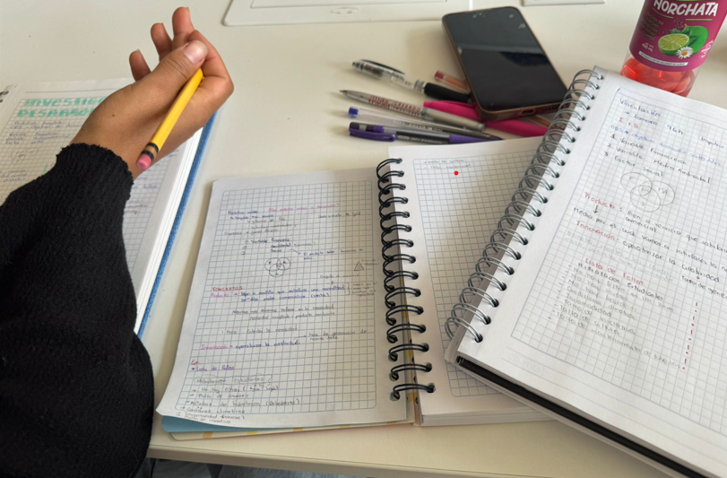
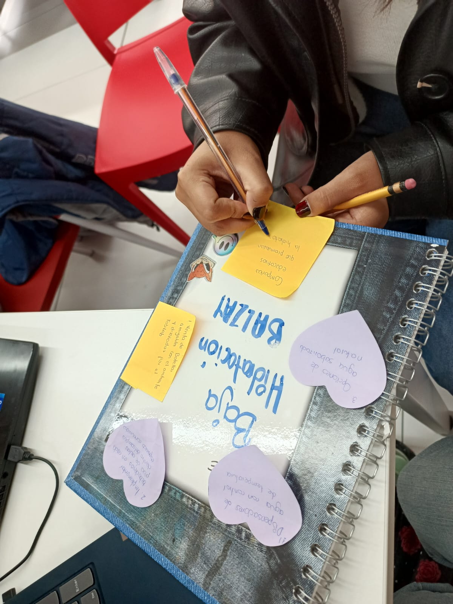
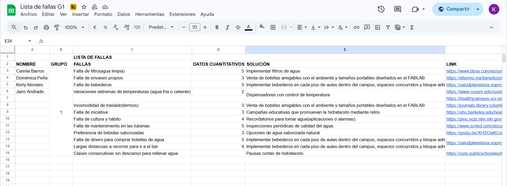
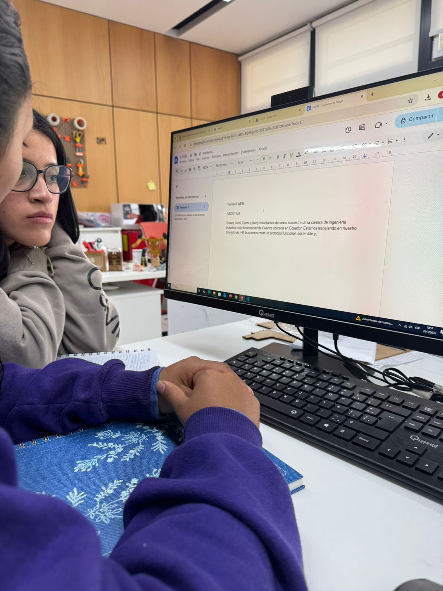
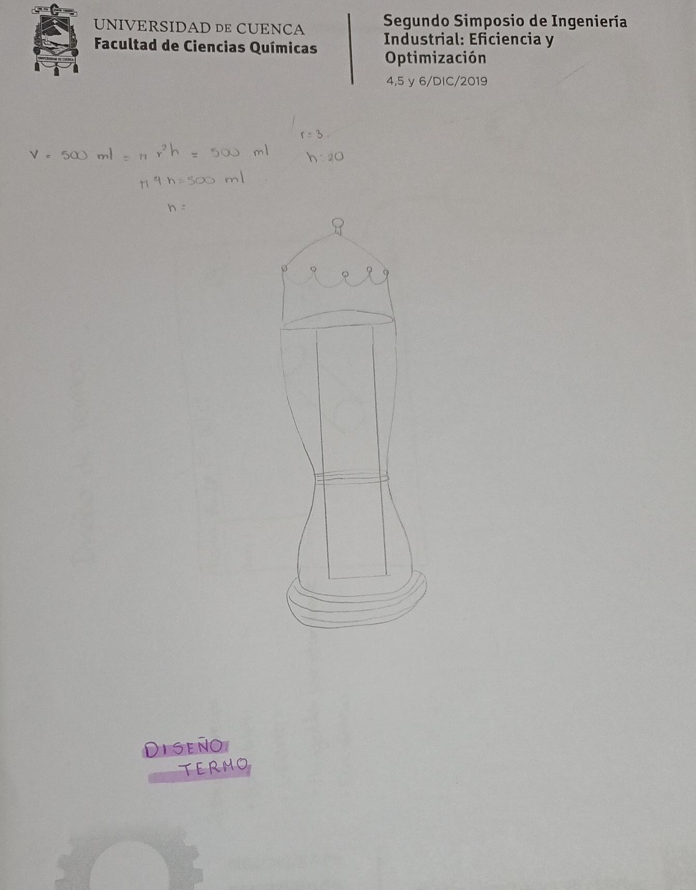
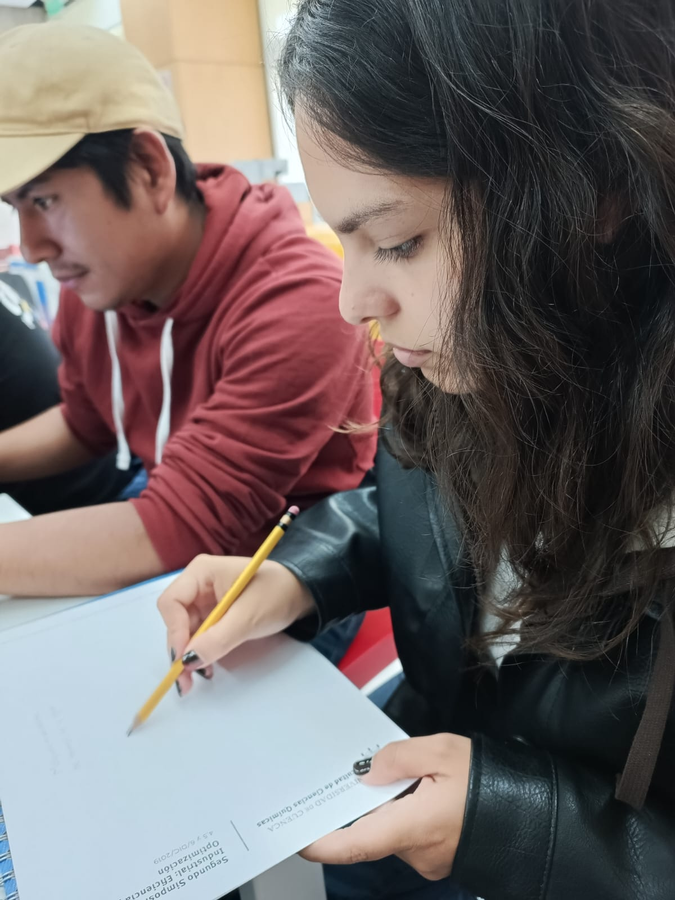
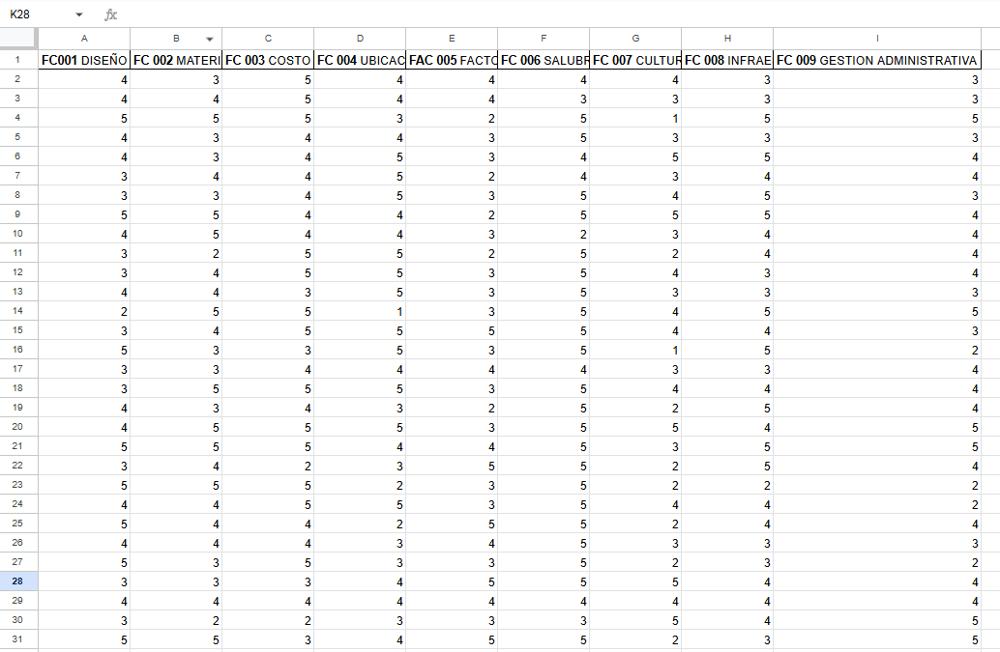
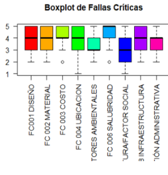
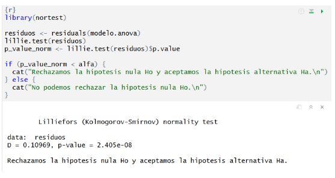
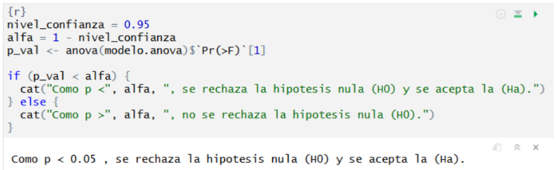

El problema identificado fue la baja hidratación en el campus Balzay.
Se realizó una lluvia de ideas, investigación web y registro en una base de datos para identificar causas y posibles soluciones.
Identificación
Espacio para registrar todas las posibles causas del problema...


Solutions research
Registro de ideas en una base de datos colectiva...

Resultados
Se identificaron causas como falta de acceso...
In this second stage of the project, the team focused on the development of sketches
based on previously selected ideas. After analyzing the alternatives, the most viable proposals
were defined to continue with the project development within the FabLab environment.
Activity Description
Once the most relevant ideas were grouped, the three most viable solutions were analyzed.
Each proposal was then represented through hand-drawn sketches in order to better visualize
their characteristics, functionality, and feasibility.
After evaluating the alternatives, it was concluded that the most viable option for development
in the FabLab is a filtered water bottle, adapted to the needs of students.
Process

Idea Grouping
The most relevant ideas from the previous stage were organized into structured groups
to facilitate comparison and analysis.

Solution Selection
Three main alternatives were selected based on feasibility, impact, and practicality.

Sketch Development
Hand-drawn sketches were created to represent each proposal and better understand
their design and functionality.
Final Decision
The filtered bottle concept was selected as the most viable solution for implementation.
Results
✔ Idea Analysis
The most relevant ideas were grouped and analyzed to identify patterns and opportunities.
✔ Viable Solutions
Three feasible alternatives were identified and evaluated in detail.
✔ Visual Representation
Sketches allowed a clearer understanding of each concept and its potential.
✔ Final Selection
The filtered bottle was chosen as the most suitable solution for development.
The sketching process played a key role in visualizing and comparing each proposal.
This approach allowed the team to clearly identify the most feasible solution
for development within the FabLab.
Key Learnings
Decision Making
Comparing multiple solutions is essential before selecting a final proposal.
Visual Thinking
Sketching is a powerful tool to represent and communicate ideas effectively.
Teamwork
Collaboration enhances the quality of analysis and decision-making processes.
User Focus
Solutions must be functional and adapted to real user needs.
In this stage, a quantitative analysis was conducted to identify the most influential
factors affecting hydration issues on campus. The study was based on data collected through surveys,
allowing a structured and statistical evaluation of the problem.
Objective
The objective of this stage is to identify and evaluate the most influential factors affecting
hydration issues within the Balzay campus. This analysis is based on data collected from students,
allowing the classification of failures into key categories such as design, cost, infrastructure,
and salubrity.
By organizing the information into comparable groups, it becomes possible to apply statistical
methods that support decision-making and guide the development of the prototype.
Methodology
Data was collected through surveys applied to students, where each factor was evaluated
on a scale from 1 to 5 according to its perceived importance.
The dataset was processed using RStudio, applying techniques such as data normalization,
boxplot analysis, and hypothesis testing. These methods allowed identifying patterns, trends,
and variability among the evaluated factors.

Data Collection
The database is structured in a tabular format, where each row represents an individual response
and each column corresponds to a specific critical factor. These factors include:
design, materials, cost, location, functionality, salubrity, culture, infrastructure,
and administrative management..

Distribution Analysis
Boxplots were used to analyze the distribution of responses for each factor, allowing the identification of central tendencies, variability, and potential outliers. This visual analysis provided insights into how students perceive each critical factor and their relative importance in relation to hydration issues on campus.
The results show that factors such as salubrity, cost, and infrastructure
tend to have higher median values, indicating that they are perceived as more important
by most participants. In contrast, other factors present greater dispersion, suggesting
variability in user opinions.
Development
The relatively high concentration of values between 3 and 5 suggests that most factors
are considered relevant, but with varying degrees of importance.
Critical Priority
Salubridad (Hygiene) is positioned as the
absolute determining factor. It is the only criterion
with a perfect score of 5, indicating that any technical
solution is unviable if it does not first guarantee
water hygiene and potability.
High Priority
In this group are found: Cost, Infrastructure, Location, Design, and Material.
Score: 4/5 ★★★★☆
Moderate Priority
Factors such as Administrative Management, Culture/Social Factor,
and Environmental Factors occupy the last place in the ranking.
Score: 3/5 ★★★☆☆
Statistical Results
Hypothesis Test
p-value < 0.05 → Reject H₀ → Model is significant
Significant differences exist between analyzed factors

Significant Variables (p < 0.05)
- Environmental: p = 0.04388
- Salubrity: p = 0.00325
- Social/Culture: p = 0.01087
Normality Test
Data is normal → H₀ accepted → Analysis valid

🎯 Key Conclusions
#1 Salubridad - Absolute priority (5/5)
#2 Costo & Infraestructura - Essential for viability
Model Significant - p < 0.05 (3 key factors)
32 Students Surveyed - Solid statistical base
Prototype Priority: Hygiene first, then cost & infrastructure
This section contains all supporting documents developed throughout the project,
including datasets, statistical analysis, sketches, and final reports.